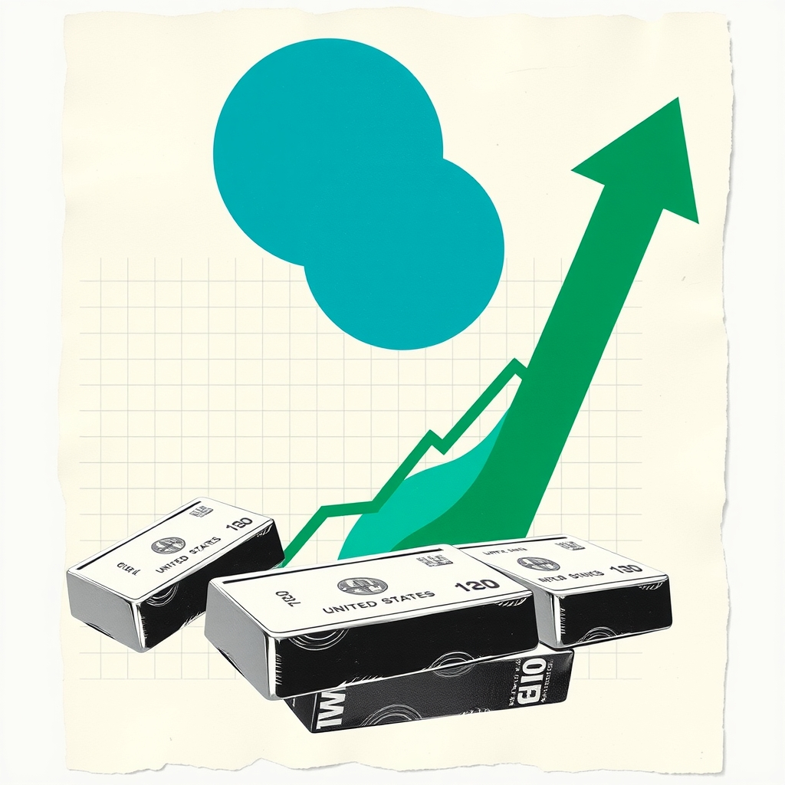
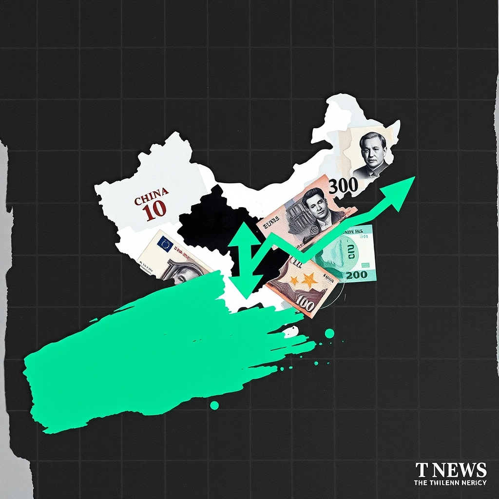

Market Newsព័ត៌មានទីផ្សារ
Daily market news and insight for gold traders from E11 Lab.
ព័ត៌មានទីផ្សារប្រចាំថ្ងៃ និងការវិភាគសម្រាប់អ្នកជួញដូរមាស ពី E11 Lab។
Gold Holds Steady as Softer Inflation Tempers Fed Betsមាសស្ទើរតែរក្សាបានស្ថិរភាព ខណៈអតិផរណាធ្លាក់ចុះកាត់បន្ថយការរំពឹងទុកលើអត្រាការប្រាក់ Fed
Gold opened the month steady as softer inflation data lowered rate-hike expectations, while high bond yields limited gains. This dynamic directly influences market sentiment and precious metal valuations.
តម្លៃមាសបានបើកដំណើរការក្នុងទម្រង់ស្ទើរតែស្មើគ្នា ដោយសារទិន្នន័យអតិផរណាទន់ជាងមុនបានកាត់បន្ថយការព្យាករណ៍អំពីការដំឡើងអត្រាការប្រាក់។ កត្តានេះជះឥទ្ធិពលយ៉ាងខ្លាំងដល់ទស្សនៈទីផ្សារ និងតម្លៃលោហៈមានតម្លៃ។

Gold Holds Steady After September Slide Amid Fed Rate BetsGold Holds Steady After September Slide Amid Fed Rate Bets
Gold prices remained steady following a 6 percent September slide as softer U.S. inflation data tempered Federal Reserve rate hike expectations. This dynamic highlights the ongoing tension between moderating inflation figures and elevated Treasury yields for bullion traders.
Gold prices remained steady following a 6 percent September slide as softer U.S. inflation data tempered Federal Reserve rate hike expectations. This dynamic highlights the ongoing tension between moderating inflation figures and elevated Treasury yields for bullion traders.

China Warns Europe Over Potential Business RestrictionsChina Warns Europe Over Potential Business Restrictions
Beijing signals firm retaliation if the European Union places curbs on Chinese businesses or products. Market participants monitor potential trade tensions closely.
Beijing signals firm retaliation if the European Union places curbs on Chinese businesses or products. Market participants monitor potential trade tensions closely.
Federal Reserve Finalizes Stress Test ChangesFederal Reserve Finalizes Stress Test Changes
The Federal Reserve finalized updates to its stress tests aimed at improving transparency and reducing capital requirement volatility.
The Federal Reserve finalized updates to its stress tests aimed at improving transparency and reducing capital requirement volatility.
Fed Official Flags Persistently High Inflation Amid Strong LaborFed Official Flags Persistently High Inflation Amid Strong Labor
Federal Reserve official Neel Kashkari noted that inflation remains elevated despite softer PCE data. Meanwhile, the broader labor market continues to show solid performance.
Federal Reserve official Neel Kashkari noted that inflation remains elevated despite softer PCE data. Meanwhile, the broader labor market continues to show solid performance.